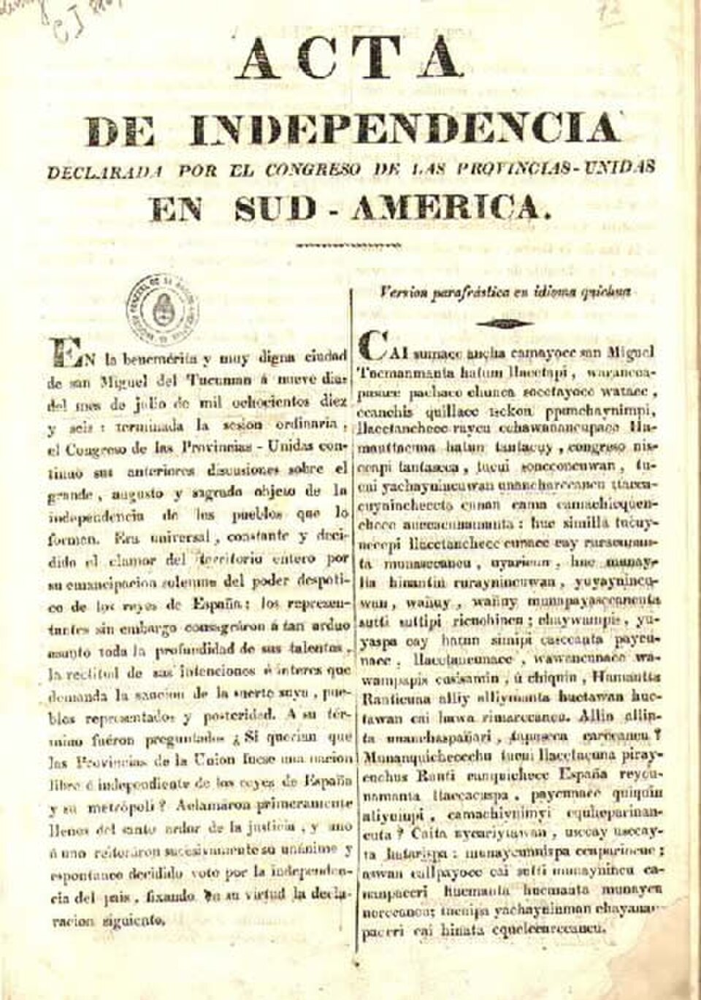

¡Somos libres! Las Provincias Unidas declaran su independencia
Los diputados proclamaron por aclamación la voluntad unánime de romper los vínculos con los reyes de España y constituirse en nación libre y soberana. La casa de la familia Bazán fue escenario del juramento.

En la sala mayor de la casa que la señora Francisca Bazán de Laguna cedió al Congreso, los diputados de las Provincias Unidas votaron hoy, puestos de pie y por aclamación, declararse «una nación libre e independiente del rey Fernando VII, sus sucesores y metrópoli». Eran las dos de la tarde cuando el presidente del cuerpo, el sanjuanino Francisco Narciso de Laprida, formuló la pregunta que seis años de revolución venían empujando: si querían los pueblos ser libres. El sí fue un estruendo.
La declaración llega en la hora más oscura. Fernando VII, repuesto en su trono, ha ahogado en sangre las revoluciones de Chile y de la Nueva Granada, y sus ejércitos amenazan desde el Alto Perú. No pocos aconsejaban prudencia. Pudo más el reclamo del gobernador de Cuyo, el general San Martín, que desde Mendoza escribía con impaciencia que era ridículo acuñar moneda, tener bandera y hacer la guerra a un rey del que se decía depender: sin independencia declarada, sus soldados serían tratados no como beligerantes, sino como insurgentes.
El Congreso sesiona en esta ciudad desde marzo, tras viajes que a algunos diputados les costaron meses de carreta y de mula por caminos de guerra. No todo fue unanimidad ni apuro: se debatió largamente qué forma de gobierno conviene a estas provincias, y hasta se oyó al general Belgrano abogar por una monarquía atemperada con un rey de la casa de los incas, idea que Buenos Aires recibió con sorna y los pueblos del norte con entusiasmo. La declaración de hoy deja esa disputa para después: primero ser, luego decidir cómo. Faltan en los bancos, duele anotarlo, los diputados de la Banda Oriental y del litoral, que responden al protector Artigas y hacen su propio camino: la casa se declara libre con algunos cuartos en litigio.
La casa de la señora Bazán hubo de acondicionarse para tanto huésped: se derribó una pared para agrandar la sala, se pidieron sillas prestadas a las familias del pueblo y el vecindario sigue las sesiones desde el patio de los naranjos. Esta noche Tucumán es una fiesta de fogatas, y en las semanas que vienen el acta se jurará en cada plaza y cada cuartel del territorio; para que la noticia llegue a todos los que habrán de sostenerla con su brazo, el Congreso ha mandado imprimirla también en quechua y en aymara, que es una manera de decir quiénes forman también esta nación. Cuentan que en el sarao del festejo los diputados coronaron de flores a una niña de la casa, Lucía Aráoz, a la que ya llaman la Rubia de la Patria.
Firmaron el acta veintinueve diputados, desde jujeños hasta porteños, y días más tarde se añadirá a la fórmula la ruptura con «toda otra dominación extranjera», para que nadie sospeche que se cambia un amo por otro. En las calles de esta ciudad, la más humilde del antiguo virreinato en recibir tamaño honor, hubo esta noche fogatas, música y lágrimas. Lo que el 25 de mayo de 1810 se murmuraba en voz baja, hoy se gritó con todas las letras.